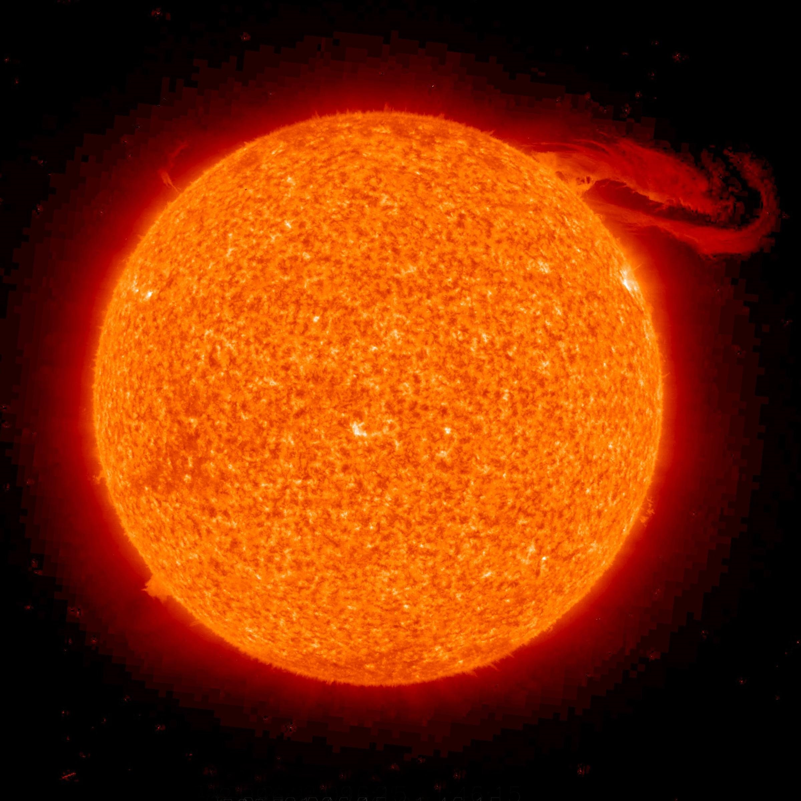
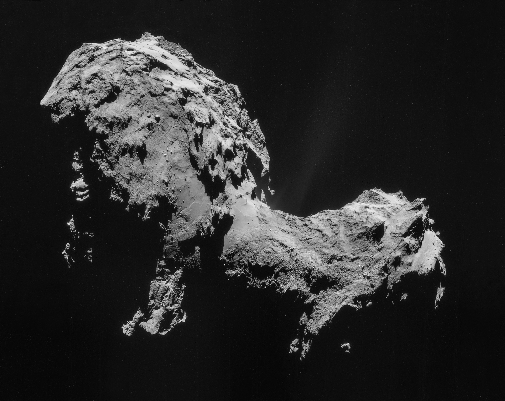

La Galaxie (avec un grand G pour référencer notre Voie Lactée) ou la Voie Lactée est une galaxie ayant une forme sprirale, qui est située dans le système solaire. Mais qu'est-ce-que le système solaire ? Quelles sont les éléments que l'on peut rencontrer ? Où est situé le système solaire dans notre Galaxie ? C'est ce que nous allons étudier.
Le système solaire est une partie de la Galaxie.
Il est composé de plusieurs éléments.
Tout d'abord, le système solaire est composé d'une étoile , qui est le Soleil. Il est composé principalement d'hydrogène (plus de73%) et d'hélium. Avec une réaction nucléaire, il brûle l'hydrogène, ce qui lui permet d'atteindre des températures gigantesques (15,1 MK au centre).
Ensuite, le système solaire est composé de planètes. On distingue alors les planètes gazeuses, qui sont celles qui sont le plus éloignées du Soleil. C'est le cas pour Saturne ou Jupiter. Il y a également les planètes telluriques, qui sont celles situées au plus proche du Soleil. Il s'agit de la planète Terre ou encore de la panète Mars. Il ne fut pas omettre les planètes naines qui sont situées dans le système solaire mais qui sont trop petites pour les considérer comme des planètes. Il s'agit de Pluton, ou encore d'Haumea.
Enfin, le système solaire est composé, en plus des planètes, d'astéroides et de comètes. Ces dernières seraient situées au fond du système solaire, quant aux astéroides, elles seraient des milliards entre Mars et Jupiter.
Comme nous venons de le voir, la Voie Lactée est composée du système solaire, lui-même composé de planètes. Nous allons vous en présenter quelques unes afin de connaître leurs principales caractéristiques.
Le nom de Mercure a été attribué par les Romains, afin de caractériser la rapidité de son déplacement.
Mercure est la planète qui est le plus proche du Soleil. Elle en est si proche que l'on voit le Soleil apparaître à une taille sept fois plus
grand que l'on ne le voit sur Terre.
L'atmosphère a presque entièrement disparu, dû à la forte chaleur ressentie à sa surface. Toutefois, il reste quelques traces d'hydrogène,
d'oxygène, de vapeur d'eau...
| Nom | Température | Structure interne | Rayon | Masse | Volume |
|---|---|---|---|---|---|
| Mercure | Entre -173°C et 427°C | Fer et Silicate | Environs 2400 km | Environs 3*1023 kg | Environs 6*1010 km3 |
Son nom a pour origine celui de la déesse de l'amour car Vénus était considérée comme la planète la plus belle du ciel.
Vénus est la deuxième planète du système solaire. On l'appelle également l'étoile du berger car elle est très brillante.
Son atmosphère est composée essentiellement de dioxyde de carbone et d'azote. Le mont Maxwell est le point le plus haut situé
sur cette planète, soit près de 11 800 m d'altitude.
Cette planète est, de par ses dimensions, de sa composition et de sa densité, la plus semblable à la Terre.
| Nom | Température | Structure interne | Rayon | Masse | Volume |
|---|---|---|---|---|---|
| Vénus | 462°C | Fer, Nickel, Silicate et Oxydes de métaux | Environs 6000 km | Environs 5*1024 kg | Environs 900*109 km3 |
L'origine de son nom est un peu particulier car il s'agit de la seule planète qui ne possède pas de nom universel
. En effet, son nom change
en fonction des mythologies.
La planète Terre est la troisième planète du système solaire. Son atmosphère est essentiellement composée d'azote et d'oxygène.
On distingue en sa surface plusieurs plaques tectoniques comme la Plaque Amérique du Nord regroupant l'Amérique du Nord, l'Atlantique
Nord-Est et le Groenland. On peut aussi citer la Plaque Eurasienne regroupant l'Atlantique Nord-Est, l'Europe et l'Asie (sauf l'Inde).
| Nom | Température | Structure interne | Rayon | Masse | Volume |
|---|---|---|---|---|---|
| Terre | Entre -80°C et 58°C | Fer et Nickel | Environs 6370 km | Environs 6*1024 kg | Environs 1*1012 km3 |
Son nom a été donné par le dieu grec de la guerre et fait référence à sa couleur rouge sang qui correspond aux champs de bataille.
Mars est la quatrième planète du système solaire. Son atmosphère est essentiellement composée de gaz carbonique, d'azote et d'argon.
Sa plus haute montagne est nommée l'Olympus Mons qui mesure 25 km de haut.
Cette planète est très étudiée car des sondes ont photographié des semblants de rivières, ce qui montre que Mars possédait de l'eau.
| Nom | Température | Structure interne | Rayon | Masse | Volume |
|---|---|---|---|---|---|
| Mars | Entre -87°C et -5°C | Fer, Nickel, Magnésium, Silice | Environs 4000 km | Environs 6*1023 kg | Environs 1,6*1011 km3 |
Jupiter est le dieux romain le plus puissant, le dieu de la foudre et du tonnerre. Ainsi, cette planète doit som nom à ce dieu.
Jupiter est la cinquième planète du système solaire et c'est la plus grosse de ce système. C'est une planète particulière car
elle ne possède pas de surface solide, tout y est gazeux. Elle est entourée d'anneaux. Son atmosphère est essentiellement composée d'hydrogène et d'hélium.
| Nom | Température | Structure interne | Rayon | Masse | Volume |
|---|---|---|---|---|---|
| Jupiter | -148°C | Hydrogène mettalique, liquide et gazeux | Environs 69 000 km | Environs 1,8*1027 kg | Environs 1,4*1015 km3 |
Saturne doit son nom à un très ancien dieu latin qui a été détrôné par Jupiter.
Saturne est la sixième planète du système solaire et la deuxième plus grosse planète de ce système. Elle est constituée d'anneaux
situés autour d'elle. Son atmosphère est essentiellement composée d'hydrogène et d'hélium.
| Nom | Température | Structure interne | Rayon | Masse | Volume |
|---|---|---|---|---|---|
| Saturne | -178°C | Fer, Hydrogène, Silicate | Environs 58 000 km | Environs 5,7*1026 kg | Environs 8,2*1014 km3 |
Cette planète a d'abord été appelée la planète Herschel. Maintenant, le nom d'Uranus provient de la divinité grecque du ciel.
Uranus est la septième planète du système solaire. Elle a d'abord été confondue à une étoile. Cette planète est principalement composée
de rocs et de glace. Son atmosphère est essentiellement composée d'hydrogène et d'hélium.
| Nom | Température | Structure interne | Rayon | Masse | Volume |
|---|---|---|---|---|---|
| Uranus | -216°C | Fer, Silicate, Hélium, Méthane | Environs 25 000 km | Environs 9*1025 kg | Environs 6,8*1013 km3 |
La planète Neptune doit son nom au dieu des océans, dans la mythologie romaine.
Neptune est la huitième et dernière planète du système solaire. Elle a été découverte grâce à des calculs mathématiques.
Elle est composée de glace et de roches et son atmosphère est essentiellement composée d'hydrogène et d'hélium.
Elle possède également des anneaux.
| Nom | Température | Structure interne | Rayon | Masse | Volume |
|---|---|---|---|---|---|
| Neptune | -214°C | Fer, Silicate | Environs 24 000 km | Environs 1*1026 kg | Environs 6*1013 km3 |
En plus de ces huit planètes, le système solaire est composé de comètes, de planètes naines,...
Nous avons vu que le système solaire était composé de planètes, de planètes naines, de comètes... Ainsi, il est extremement grand.
Toutefois, de manière très surprenante, le système solaire ne représente qu'une infime partie de notre Galaxie, la Voie Lactée.
Ainsi, nous pouvons essayer de nous faire une idée de l'immensité de notre galaxie, où il faut 100 000 AL (années lumières) pour
passer d'un côté à l'autre. C'est-à-dire que si l'on voyage à la vitesse de la lumière (soit près de 3*10^8 m/s), vitesse la plus rapide
connue jusqu'à aujourd'hui, il nous faudrait 100 000 ans pour traverser la totalité de notre Galaxie !
D'où l'immensité difficilement imaginable de notre Voie Lactée...
Comme nous venons de l'étudier, le système solaire, de par son immensité, représente une infime partie de la Voie Lactée. Nous pouvons
alors nous poser la question : Que rencontrons-nous d'autre dans la Voie Lactée ?
Tout d'abord, le centre de la Voie Lactée. Ce dernier est composé de gaz, de poussières et d'étoiles. Il s'étend sur 26 000 AL (années lumières)
. De plus, un trou noir se cache en son centre. Ce trou noir a une masse de 4 millions de fois de celle du Soleil ...
Pour avoir un ordre de grandeur, la distance séparant le noyau de la Galaxie au centre du Soleil du système solaire est de plus de 26 000 AL.
La Galaxie est composée de bras spiraux. Si on reprend la photographe ci-dessous, on distingue 4 bras majeurs, qui partent du centre de la
Galaxie et qui se nomment : Le Bras de la Règle ou dy Cygne,le Bras Ecru-Croix, le Bras Sagittaire-Carène et le Bras de Persée.
Enfin, la Galaxie est composée d'un halo, aussi appelé halo galactique. Il est situé au-dessus du bulbe (qui entoure le noyau de notre
galaxie). Cet halo qui représente 20% de la masse de la Voie Lactée, est essentiellement composé de nombreuses étoiles agées et d'une très grande
quantité de poussières et de gaz.